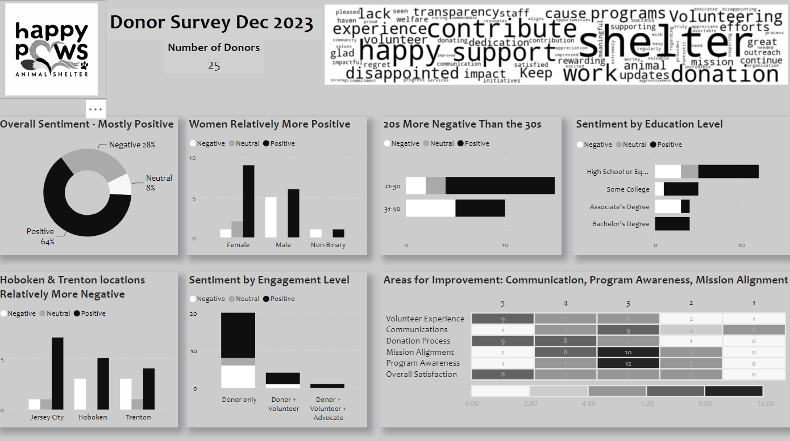
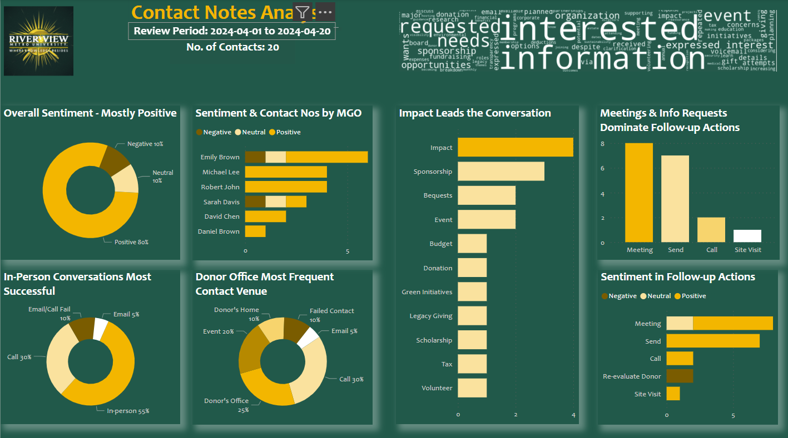
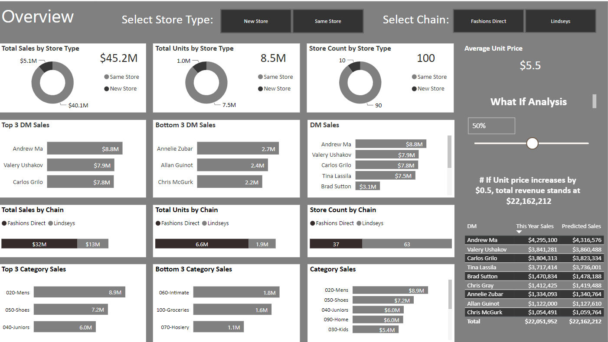
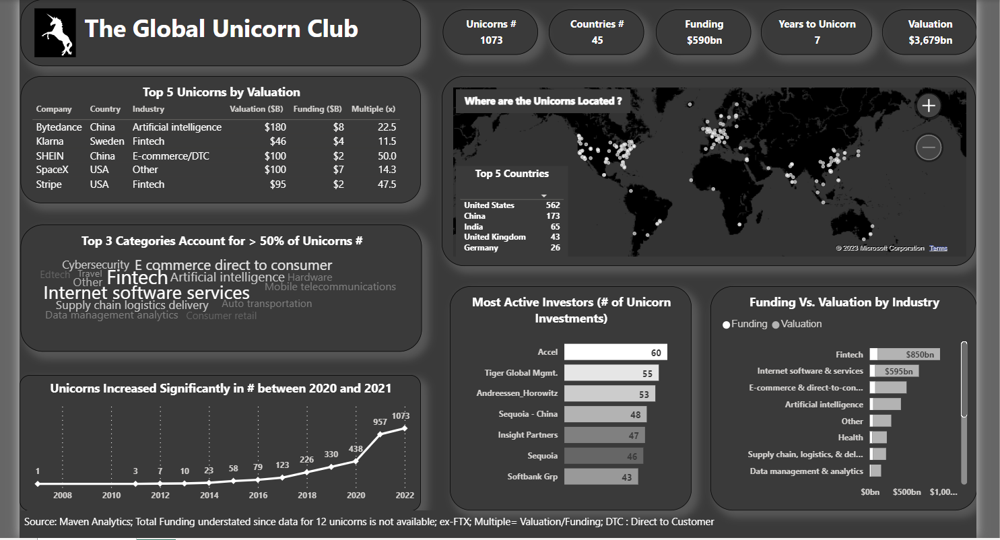
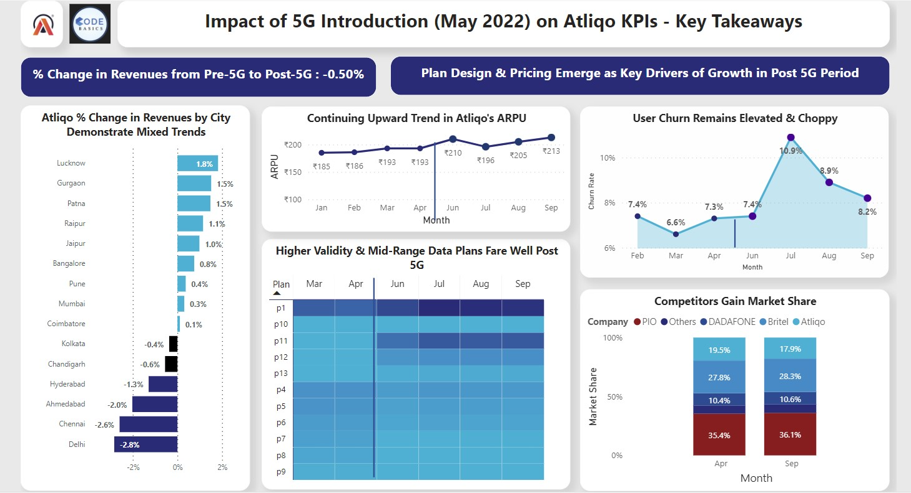

A. How one nonprofit reclaimed 40+ hours a quarter with smarter reports. Use arrows to scroll:
B. How a food bank moved beyond pounds and people to measure trust and dignity. Use arrows to scroll:
Survey Analysis

Data Source - AI.
Sentiment Analysis on Contact Meeting Notes

Data Source - AI.
Marketing Campaign Analysis

Data Source- Kaggle.
Sales Analysis

Data Source - Yoda.
Supplier & Downtime Analysis

Data Source- Udemy.
The Global Unicorns Club

Data Source- Maven Analytics.
Impact of 5G Introduction

Data Source- CodeBasics Challenge 3.
© AGAYA Consulting Inc. • Data Confidence for Nonprofit Leaders • Toronto, Canada